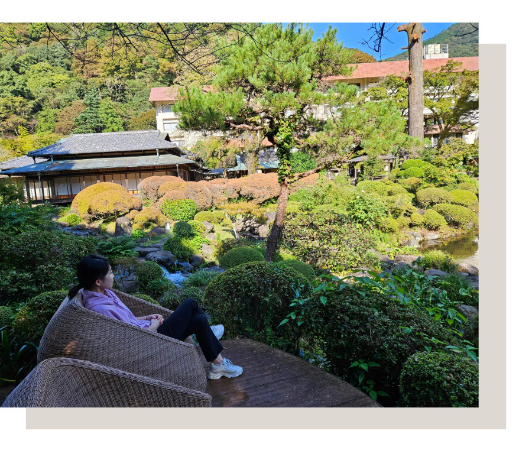

I'm a junior UX/UI and Web Designer with front-end development skills. I design and build e-commerce and brand websites, from wireframes and visual design to responsive implementation in HTML, CSS, and JavaScript. I enjoy working across the entire process, from understanding what users need to shipping a working page.
My path into design started in customer support. I spent nearly two years at Zara Canada's Head Office supporting U.S. and Canadian customers. This gave me a practical understanding of e-commerce operations and the challenges people face when shopping online. Working with customers from different backgrounds taught me to listen carefully, identify what they need, and communicate solutions clearly.
To build my technical foundation, I completed the SMART Cloud IT Master back-end development course at KITA's Soft Engineer Society (SES) in Korea, where I studied SQL, Java, and programming fundamentals. It gave me a clearer understanding of how applications and databases work behind the scenes, and I believe this helps me grasp technical constraints and communicate more easily with developers.
I later studied web design at Digital Hollywood STUDIO in Tokyo, where I developed a keen eye for detail and a deeper understanding of web design. There I independently designed and built two complete websites: a brunch café website and an organic vegetable delivery e-commerce store. My work covered planning, information architecture, visual design, and responsive implementation in Figma, HTML, CSS, and JavaScript.
Since March 2026, I've been a remote volunteer UX/UI Designer at BILA (Baseball Innovation League Association), a U.S.-based non-profit. I'm building its WordPress/WooCommerce store with PayPal checkout, designing the storefront homepage in Elementor, and conducting a UX audit to improve the shopping experience, working directly with the client. I've also written web content for the Korea Hall of its Global Baseball Innovation Museum.
Having studied and worked in Korea, Canada, and Japan, I communicate in Korean, English, French, and Japanese. I value accessible, intuitive interfaces and close collaboration between design and front-end development. I'm looking to join a team as a junior UX/UI or Web Designer, where I can contribute to real projects and keep growing.
Based in Vancouver. Canadian Permanent Resident, authorized to work in Canada.
UX/UIデザイナー兼Webデザイナー(ジュニア)として、フロントエンド開発のスキルも持っています。ECサイトやブランドサイトを、ワイヤーフレームとビジュアルデザインから、HTML、CSS、JavaScriptによるレスポンシブ実装まで一貫して手がけています。ユーザーが求めていることを理解するところから、実際に動くページを公開するところまで、制作の全工程に関わることが好きです。
デザインへの道は、カスタマーサポートから始まりました。Zara Canada本社で2年近く、アメリカとカナダのお客様への対応を担当しました。この経験を通じて、ECの運営実務と、オンラインショッピングでお客様が直面する課題を実践的に理解できました。さまざまな背景を持つお客様と接する中で、丁寧に耳を傾け、ニーズを見極め、解決策を分かりやすく伝える力を身につけました。
技術的な基盤を築くため、韓国のKITA Soft Engineer Society(SES)で、SMART Cloud IT Masterのバックエンド開発コースを修了し、SQL、Java、プログラミングの基礎を学びました。アプリケーションとデータベースが裏側でどのように動いているかをより深く理解でき、そのことが技術的な制約の把握や、開発者とのスムーズなコミュニケーションにつながると考えています。
その後、東京のデジタルハリウッドSTUDIOでWebデザインを学び、細部へのこだわりと、Webデザインへのより深い理解を身につけました。ここで、ブランチカフェのWebサイトと、オーガニック野菜の宅配ECサイトの2つのサイトを、すべて一人で設計・制作しました。企画、情報設計、ビジュアルデザイン、そしてFigma、HTML、CSS、JavaScriptによるレスポンシブ実装までを担当しました。
2026年3月からは、米国の非営利団体BILA(Baseball Innovation League Association)で、リモートのボランティアUX/UIデザイナーとして活動しています。WordPress/WooCommerceによるストアの構築とPayPal決済の導入、Elementorでのストアフロントのホームページのデザイン、そしてショッピング体験の改善に向けたUX監査を、クライアントと直接やり取りしながら進めています。また、同団体のGlobal Baseball Innovation MuseumのKorea Hall向けに、Webコンテンツも執筆しました。
韓国、カナダ、日本で学び、働いてきた経験から、韓国語、英語、フランス語、日本語でコミュニケーションができます。アクセシブルで直感的なインターフェースと、デザインとフロントエンド開発の密な連携を大切にしています。ジュニアのUX/UIデザイナーまたはWebデザイナーとしてチームに加わり、実際のプロジェクトに貢献しながら成長し続けたいと考えています。
バンクーバー在住。カナダ永住権保持者で、カナダでの就労資格があります。
01
When I had trouble getting my visa in Canada, I stayed calm and tried to understand the situation clearly.
I found out that a local member of parliament used to work for the immigration office, so I contacted him and explained my goals and how I could contribute to the community.
With his help, I was able to get my visa successfully.
Through this experience, I learned how to identify problems, think of effective solutions, and take action with confidence.
In web and UX/UI design, I use the same attitude. I observe, analyze, and test to understand users’ needs and solve their problems through design.
Being active and taking initiative, instead of just reacting to issues, has become an important part of how I work as a designer.
02
While working at ZARA Canada Head Office in the U.S. administration department, I communicated with customers from diverse age groups and cultural backgrounds. I always tried to understand their situations and identify what they truly needed, as well as the challenges that needed to be solved. Through this experience, I developed strong listening skills and learned how to clearly understand others’ emotions and intentions. In web and UX/UI design, I believe the same approach applies when working with clients. I listen carefully to discover their hidden needs and reflect them in design and user experience solutions.
03
By speaking French, English, and Japanese, I have been able to closely observe cultural nuances and understand how people’s values and aesthetics differ. These experiences have made me more adaptable, open-minded, and sensitive to design that connects across cultures. While working at ZARA Canada Head Office, I discovered how design and motion can enhance the way people perceive products, which inspired my passion for IT and web design. My goal is to create beautiful and practical designs that address challenges and bring satisfaction to both clients and users.